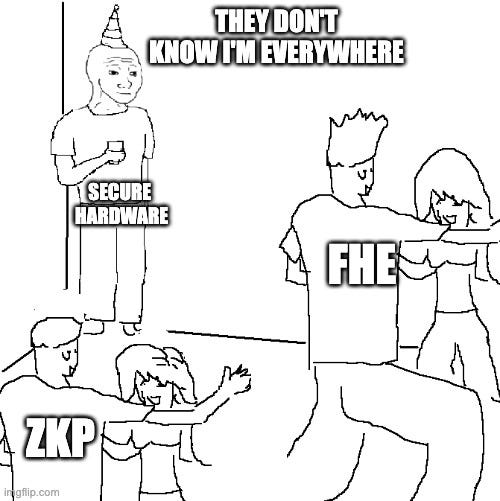
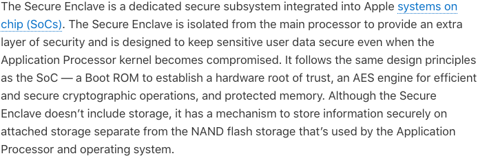
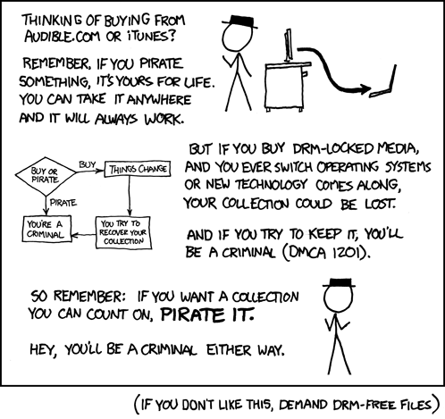

Demystifying SGX part 4— Secure hardware
Demystifying SGX — Part 4— Secure hardware

Secure hardware is all around us, quietly working behind the scenes to protect our digital lives.
Your laptop, phone, smartwatch, car, TV, game console, Blu-Ray player, Chromecast, home cinema system, crypto wallet, data centres, certificate providers, blockchain nodes, the WorldCoin Orb, and even your PC monitor are all powered by secure hardware. If you look deep enough, you will find it in every device you use.
In this fourth instalment of the “Demystifying SGX” series, we’ll focus on everyone’s favourite activities: messing with the iPhone and watching Netflix.
iPhone Data Protection
In the modern era, smartphones are treasure troves of sensitive information, housing everything from credit card details and passwords to emails, private conversations, documents, and private photos. However, these devices are also susceptible to loss or theft, posing a significant challenge in safeguarding the data they contain. This concern becomes even more pronounced when considering business phones, which often hold closely guarded corporate secrets.
Early iPhones, until the third generation, had almost no protection. For instance, a thief could remove the storage card, transfer it to another device, and gain unrestricted access to all its contents, including sensitive passwords.
To mitigate this vulnerability, Apple implemented measures designed to deter non-sophisticated thieves. One such measure involved automatically wiping the data after ten unsuccessful attempts at entering the PIN.
While this feature offered a degree of protection, it was clear that a more comprehensive solution was urgently needed.
Adding encryption
In the quest for data security on our devices, it’s tempting to think that encrypting all data with a key derived from the PIN, known only to the user, is a foolproof solution. However, as we’ll explore in this section, this simple approach has significant limitations.
The fundamental flaw with using a four or six-digit PIN as the sole encryption key is the lack of entropy, which leaves the data vulnerable to attackers armed with modern computing power.
Requiring users to enter a complex password every time they unlock their device could solve the problem, but it is impractical and burdensome.
Another critical drawback is that all data is lost if the user forgets the PIN. Note: The good news is that it can be brute-forced back by a “helpful” service because the entropy was low.
The crux of the issue lies in selecting the “root of trust”. This naive approach places the onus solely on users and, using a crypto term, gives them full custody of the data. However, this model is impractical, leading smartphone manufacturers, including Apple, to embrace a different approach.
They must shift the root of trust to themselves to give users a good experience.
The digital fortress
Apple has taken on the challenge of securing user data, including from themselves, and ensuring a seamless and convenient user experience.
Their high-level requirement is that the user can access their phone swiftly while keeping thieves and hackers at bay, even when they have physical possession of the device or attempt to deceive the user with malicious apps. Essentially, they aim to offer a user experience akin to using a familiar website like Facebook, with one crucial difference — the “attack surface” they have to defend is significantly larger when data resides on a device controlled by adversaries.
So, how does Apple meet these ambitious security goals?
They do so by transforming parts of the device into a digital fortress that can defend itself offline. The attacker should be unable to access data even when removing the storage, placing measurement devices, or replacing various electronic circuits.
Apple takes responsibility for the security of the fortress as long as the user keeps it up to date and doesn’t unlock the door.
Authentication
To satisfy the first requirement, the device must have the means to verify the user’s identity instantly and offline. Therefore, the authentication program is the first line of defence, and it must operate securely because compromising it grants full access to the data.
A typical program is a collection of files that reside in storage and are loaded and executed as needed. Crafty attackers, if they possess the device, could identify the files, replace them with a corrupted version, and subsequently start the device, bypassing authentication.
The simplest solution is to embed the program into the CPU, but that’s not feasible because it can’t be upgraded. Instead, a more sophisticated approach involves embedding a public key and a mechanism that allows only programs signed by that key to execute.
This combination of cryptography and hardware protection forms the first link of trust, allowing Apple to improve the software without risking corruption.
Encryption
We now have a reliable authentication mechanism, so it’s time to consider data encryption.
If the key is stored in plaintext, the attacker can find it by scanning the storage. It can’t be encrypted itself because then you face the circular problem of where to store this new key, and so on.
The solution is to embed it in the CPU, accompanied by a mechanism to hand it over only to the authentication program.
Conceptually, we need a CPU with some basic logic and two " fused " keys to satisfy our requirements. The first key will protect the authentication program, and the second will be used for encryption.
Note: If you read the first parts of this series, you might notice the similarity to Intel SGX.
After reading this simplified high-level overview, you should be equipped to understand how Apple achieved this.
The Secure Enclave Processor
Apple chose a different approach from Intel. Instead of extending the functionality of the main CPU and transforming it into a Trusted Execution Environment (TEE), as Intel has done with the “Software Guard eXtensions”, they opted for introducing a dedicated secure co-processor. The iPhone 5S was the first generation to include it.
Apple is quite open about these security aspects:

As you can see from the description above, the Apple Secure Enclave Processor (SEP) only has security responsibilities. It is fused with keys allowing it to establish a hardware root of trust. In other words, this enables it to boot up through a secure process such that only trusted and approved firmware, kernel (SEPOS), and applications are loaded into it. This is a more elaborate way of describing how only signed programs can execute.
The SEP also has a unique ID (UID) root cryptographic key “fused” into it. The UID is not known to anyone, including Apple*. They only record a derivate of this UID, which they use to authenticate messages from the phones. The UID is used as entropy to generate the encryption key.
Note*: This guarantee cannot be proven since Apple controls the manufacturing process and the software installed on the SEP.
As you can see, this mechanism satisfies all requirements. The SEP runs only verified programs and performs the authentication and encryption in perfect isolation. Hardware security is used both for establishing a root of trust and achieving isolation.
Note 1: To make a parallel with SGX, the main operating system running on the iPhone and all installed applications are considered “untrusted code”.
Note 2: Jailbreaking an iPhone generally means that the root-of-trust checks are bypassed, so one can install and run software not signed by Apple.
It’s useful to drill more into the authentication logic performed on a modern iPhone to understand how important hardware security is to all aspects.
Face ID authentication
From a high level, a user logs into the phone by typing the PIN, pressing their fingerprint, or looking at the camera.
For the latter, the authentication logic has to compare the images received from the camera against a biometric template recorded when the user created the account.
There are many attacks to consider and prevent before such a solution is secure, which is why it took so long to roll out. The first iPhone with this feature was the “iPhone X” in 2017.
For example, the attacker can attempt to trick the mechanism by pointing the camera to an image of the owner. Apple solves this by taking multiple pictures from slightly different angles and creating depth.
A more sophisticated attacker who gained access to the phone could hook into the circuits and always send the right sequence of images to create the desired depth. These photos of the victim could be taken on the street. This is solved by introducing hardware security elements in all the related circuits, which must authenticate to each other.
Note that if you drop your iPhone and damage the FaceId circuit, it can’t be replaced without replacing the secure enclave processor, which means losing all data. True story.
Backups
You may be wondering by now how backups work since the phone encrypts the data, and Apple doesn’t have the key. How can they help you restore from backup on a different device if you lose your phone?
To solve this problem, Apple used even more secure hardware. They created a backend infrastructure based on a complex setup of Hardware Security Modules (HSMs) that operate without human access.
Each phone is assigned a backup key that multiple HSMs can process with redundancy. The key is pushed to the phone with regular software updates and encrypts the data before uploading it to the cloud.
The HSMs will only process a backup after the user has proven their identity.
It is truly secure hardware all the way.
Digital rights management (DRM)
While protecting user data on physical devices like iPhones presents formidable challenges, the stakes escalate when a company endeavours to safeguard its premium content, such as high-quality media, across various user devices.
“Digital rights management”, while contentious, plays a key role in how we consume media, whether distributed on physical discs or streamed via online platforms like Netflix.
By the end of this section, you will appreciate that it’s not the technical solution that is controversial but the fact that protecting the consumer ownership of media was not a requirement.
The AACS standard
The Blu-Ray DRM mechanism, which we’ll analyse below, is defined by a standard called “Advanced Access Content System“, or AACS.
A movie on a Blu-Ray disc is a collection of files containing high-quality video and audio assets. AACS protects them mainly through encryption but with some elements of proprietary formats, like requiring non-standard disc drives.
The main requirement is pretty obvious: nobody should be able to “rip” the movie. This means creating unencrypted files with high-quality content that can be downloaded and played using a regular media player. The second requirement is preventing cloning a disc bit by bit.
There are also more subtle requirements. For example, compromised players must be “revoked” and prevented from doing further damage. All this must be achieved without internet access because users should also consume the content offline.
As you can imagine, the solution is quite complex, so we’ll only cover it from a high level.
Playing Blu-Rays on dedicated players
The “root of trust” in the AACS scheme is the player itself, which reads the content on the disc, decrypts it and then loads the plaintext media content in its internal memory to decode and play it on the TV. If the owner can open it up and connect cables, they could easily rip the movie.
As a result, a compliant player has to be built like a fortress, so there is no possibility of extracting anything from it besides the output HDMI cable.
Ultimately, the problem that AACS solves is to ensure that the movies can only be played on compliant players.
Let’s get straight to it.
Every Blu-Ray disc has a Volume ID (VID) serial number burnt in, which can only be written and read with special equipment. This mechanism prevents bit-by-bit copying of a disc with standard equipment or even playing the disc on a device that doesn’t have this feature.
On top of this protection, the VID is encrypted with a key issued by an AACS authority so that only approved manufacturers can decrypt it.
The VID is used as the first of the inputs to the decryption.
This might appear to solve the problem, but it’s not fine-grained enough, so the standard defines a second mechanism.
When manufactured, each compliant playing device is given a set of secret Device Keys. The media files are encrypted with a complex combination of the device keys of all compliant and non-revoked players.
When a particular device is found to be vulnerable, its device keys are revoked, and no future movie will use that key during encryption, so the compromised device will no longer be able to decrypt any new discs, even if it stays offline.
Note: The compromised device can be detected through complex techniques similar to watermarking.
Playing a Blu-Ray on a PC
A more interesting problem to readers of this series is to consider what it takes to play a Blu-Ray disc on a PC equipped with an AACS-compliant disc drive (one that can read the VID).
The most pressing problem is the management of the “Device Keys” and the VID decryption key.
If these keys are included with the installer, even if obfuscated, they can be retrieved by reverse engineering. But even if that doesn’t succeed, the program will eventually load the keys in memory, and thus, they will be accessible from programs running at a higher privilege level. Essentially, any computer user following a simple guide could easily retrieve the secret key and thus get closer to ripping the movie.
We can see that a pure software implementation of the Media Player is impossible to secure against a competent attacker, so the only solution is to add a hardware component and create a trusted “Virtual Blu-Ray player” running on the untrusted computer.
Secure Media Player powered by Intel SGX
Since this series is focused on SGX, let’s try to use it to secure our media player application for the PC.
The first problem is to provision the secure keys. They can’t be shipped encrypted with the installer because the sealing key of each CPU is unique.
As a result, we must introduce an AACS-approved remote service to check the attestations and then send the secrets sealed for each CPU. This also means the computer has to be online during installation.
The other SGX features described in the previous articles will allow the program to run in perfect isolation to safely decrypt the content and then send it to the display encrypted with the HDCP standard, another protocol to protect media as it travels through connections.
Note: HDCP is also protected by secure hardware and encryption. The monitor creates a secure connection with the media player program.
There is a perception that by doing this, the movie studios are “running programs on my computer outside of my control”, which is inaccurate since the user chooses to run the media player and hit play on the movie. There is not much difference from a regular Blu-Ray player.
The alternative to this mechanism is for PCs to no longer be able to play high-quality media at all. This is precisely what happened when Intel deprecated SGX for consumer CPUs.
DRM Controversies
DRM is a controversial technology for a good reason. But it is not the technology itself that is the problem, but the media industry, which doesn’t protect consumers when the encoding formats are deprecated.
As we’ve seen in the Blu-Ray example, you need to buy a special player or install a program that asks permission to play that content. Imagine the AACS format is deprecated in five years, and your player breaks. Buying a new player might not play the movie, and your Blu-ray disc becomes useless.
To fix the problem, consumers should buy the ownership of a title, which should be portable across providers. Unfortunately, this was not a requirement.

Secure Streaming
Have you ever tried watching “Netflix” on your PC and noticed poor quality, even though you had a great internet connection? Or did you have to switch from Chrome to Safari on your Macbook to improve the quality?
The reason for that is DRM and secure hardware.
When we looked at the software-only media player, we concluded it was impossible to make it secure. The same problem applies to streaming, except that the content source is not a disc but the network.
When your device connects to a streaming server and requests to play a movie, it will be asked to prove its security capabilities. The server will decide in real-time the quality of the stream and how it will encrypt it.
Each manufacturer has a different system.
Apple uses secure coprocessors, which are present on all of their devices, including Macbooks. Their native Safari browser has direct access to the SEP (the secure enclave processor) and uses it for DRM. Streaming servers, like Netflix, trust the Apple stack to keep their data secure and stream high-quality content.
When you connect to Netflix from an Apple device, it will prove its identity by signing a message with the UID, which Netflix can check on the Apple servers to understand whether the device is genuine and up-to-date. Then, the stream will be routed through the SEP and then to the monitor.
Alternative browsers, like Chrome, cannot access native security features on Apple devices, so they must implement a software-only DRM, which explains the poor quality.
Microsoft has a similar technology based on secure coprocessors called “Pluton”.
Streaming solves the controversial problem of deprecated formats because users now own the right to view a movie on a service, but it introduces vendor lock-in. For example, the titles you own on “Amazon Video” can’t be transferred to “Disney”.
Conclusion
Secure hardware is the unsung hero of modern devices.
It keeps our data safe, gives us the immense convenience of logging in just by looking at the camera, and allows us to watch high-quality movies in our living room or while travelling.
While emerging technologies like Zero Knowledge Proofs( ZKP) or Fully Homomorphic Encryption (FHE) saw lots of investment and promises, they are still areas of research that will, at best, complement secure hardware to protect us.
The “Demystifying SGX” Series
In part 1, we look at the hardware features behind SGX.
In part 2, we look at the features that make CPUs fast, and how they can be exploited.
In part 3, we look at the architecture of an SGX enclave, then explore how the program is executed and even build a simple program.
In part 4, we look at real-life applications of secure hardware.